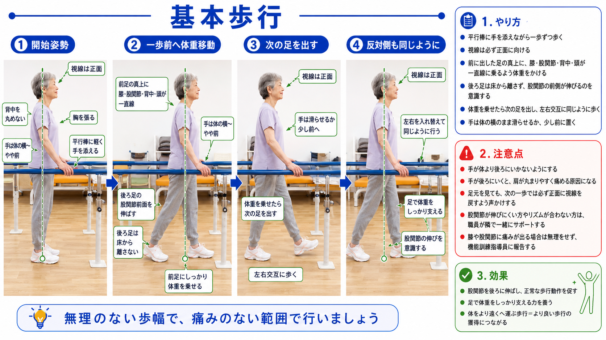

基本歩行
平行棒に沿って正しいフォームで歩行することで、日常生活に必要な歩く力とバランスを養います。

📸 ①開始姿勢 → ②体重移動 → ③次の足を出す → ④反対側も同じように
✅ 何に効く？
- 股関節を後ろに伸ばし、正常な歩行動作を促す
- 足で体重をしっかり支える力を養う
- 体をより遠くへ運ぶ歩行＝より良い歩行の獲得につながる
📋 やり方（4ステップ）
1
開始姿勢
背中を丸めない・胸を張る・平行棒に軽く手を添える・手は体の横〜やや前
2
一歩前へ体重移動
前足の真上に膝・股関節・背中・頭が一直線になるよう体重をかける。後ろ足の股関節前面を伸ばし、床から離さない
3
次の足を出す
体重を乗せたら次の足を出す。左右交互に歩く。手は体の横のまま滑らせるか少し前へ
4
反対側も同じように
視線は必ず正面。股関節の伸びを意識しながら繰り返す
💬 声かけ例
効果を伝える
「歩く力がついて、外出が楽になりますよ」
安全を伝える
「転びにくくなるための運動です。焦らずゆっくりやりましょう」
動作を促す
「背筋を伸ばして、目線は前にしましょう。そうそう、上手です！」
⚠️ 注意点
- 手が体より後ろにいかないようにする（肩が丸まり痛める原因になる）
- 足元を見ても、次の一歩では必ず正面に視線を戻すよう声かけする
- 股関節が伸びにくい方やリズムが合わない方は、職員が隣でサポートする
- 膝や股関節に痛みが出る場合は無理をせず、機能訓練指導員に報告する
💡 現場のポイント
無理のない歩幅で、痛みのない範囲で行いましょう。歩幅を大きくしようとして体が前のめりになりやすいので、「小さい歩幅でも股関節を後ろに引く意識」を促してください。